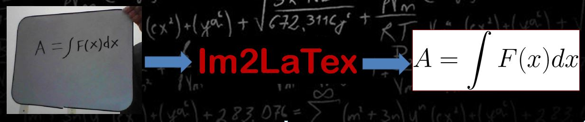
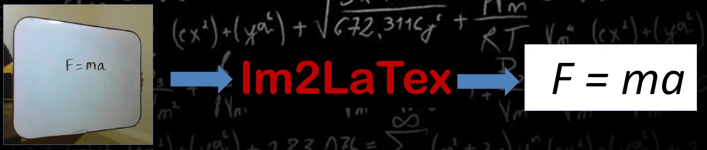
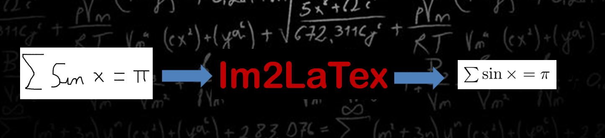
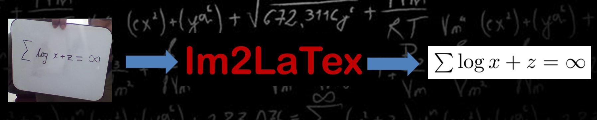
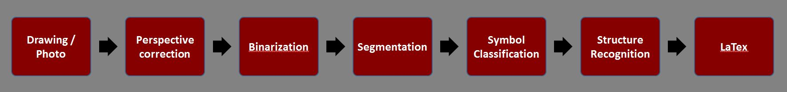
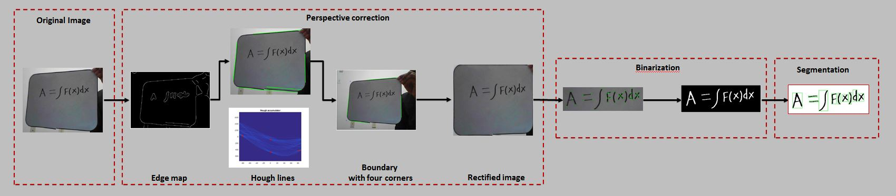
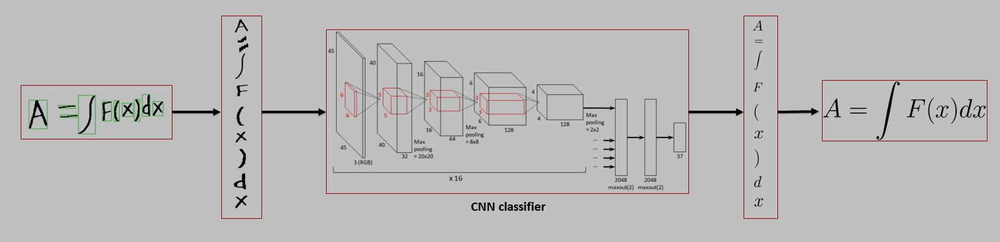
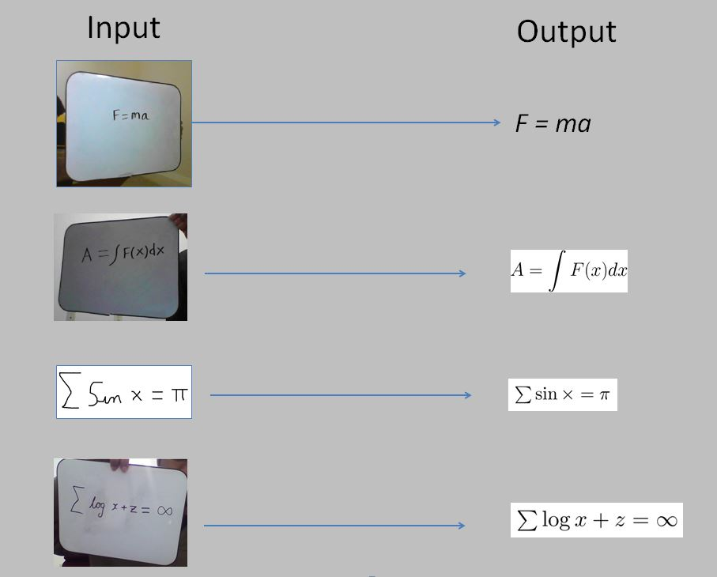

<!DOCTYPE html>
<html lang="en'>
<head>
	<meta cahrset="utf-8" />
	<title>Im2Latex </title>
	<meta name = "viewport" content-"width-divice-width, intialscale=1.0">
	
	<style>
		body{
			 margin-top: 0px;
			 margin-right: 0px;
			 margin-bottom: 0px;
			 margin-left: 0px;
			background-image: url("red.jpg");
			overflow: hidden;
			font-family: Verdana, Tahoma, Arial, sans-serif;
			font-size: 18px;
			overflow: auto;
		}
		
		h1,h2,h3,h4{
			margin:0px;
			text-align:left;
			color: #9b4337;
		}
		h1{
			font-size: 10em;
		}
		h2{
			font-size: 2em;
			padding-left: 10px;
		}
		
		h3{
			font-size: 1.5em;
			padding-left: 20px;
		}
		h4{
			font-size: 1.3em;
			padding-left: 30px;
		}
		
		p{
			margin:0px;
			text-align: justify;
			padding: 2%;
			color: #AAAAAA;
		}
		
		#wrapper{
			margin: auto;
			max-width: 1200px;
			background: #202020;
			width: 98%;
			<!--border: 1px solid #878E63;
			border-radius: 2px;-->
			box-shadow: 0 0 10px 0px rgba(12, 3, 25, 0.8);
		}
		
		.first{
			display: block;
			margin:auto;
			height: auto;
			width: 1200px;
		}
		.diff{
			display: block;
			margin:auto;
			height: auto;
			width: 300px;
		}
		.diff2{
			display: block;
			margin:auto;
			height: auto;
			width: 800px;
		}
		
		#callout{
			width: 100%;
			height: auto;
			background: #202020;
			overflow: hidden;
		}
		#callout p{
			text-align: right;
			font-size: 13px;
			padding: 0.1% 5px 0 0;
			color: #AAAAAA;
		}
		#callout p a{
			color:#AAAAAA;
			text-decoration: none;
		}
		header{
			width: 96%;
			min-heigh: 125px;
			padding: 5px:
			text-align: center;
		}
		nav ul{
			list-style: none;
			margin: 0;
			padding-left: 0px;
		}
		
		nav ul li{
			float:left;
			border: none;
			width: 20%;
		}
		nav ul li a {
			background: #202020;
			display: block;
			padding: 5% 12%;
			font-weight: bold;
			font-size: 15px;
			color: #AAAAAA;
			text-decoration: none;
			text-align: center;
		}
		
		nav ul li a:hover, a{				
			background-color: #505050;
			color: #A0A0A0;
		}
		
		.banner img{
			width: 100%;
			border-top: 1px solid #878E63;
			border-bottom: 1px solid #878E63;
		}
		
		.leftcol{
			width: 55%;
			folat: left;
			margin:-2%	 1% 1%;
		}
		
		.sidebar{
			width: 40%;
			float: right;
			margin: 1%;
			text-align: center;
		}
		
		tab1{
			padding-left: 4em;
		}
		tab2{
			padding-left: 2em;
		}		
		tab3{
			padding-left: 1em;
		}
		
	</style>
	
	<head>
		<body>
			<div id="wrapper">
				<!-- <div id="VT">
				<p> Computer Vision</p>
				</div> -->
				
				<header>
					
				</header>
				<br>
				
				<nav>
					<ul>
						<li class = 'active'><a href = "#">About</a></li>
						<li><a href = "http://www.iapr-tc11.org/mediawiki/index.php/CROHME:_Competition_on_Recognition_of_Online_Handwritten_Mathematical_Expressions">Dataset</a></li>
						<li><a href = "https://github.com/KeerthiGowda/Im2LaTex/tree/gh-pages/Dataset">Processed Dataset</a></li>
						<li><a href = "Im2Latex_Poster.pdf">Poster</a></li> 
						<li><a href = "https://github.com/KeerthiGowda/Im2LaTex/tree/gh-pages/canvas">Canvas</a></li>
					</ul>   
				</nav>
				
				<br>
				
				<section class "leftcol">
					<p><br><br>
					Automating redundant tasks help people to work on more interesting things.
					In the era of smart phone revolution and super computing, one of the redundant and laborious tasks is rewriting handwritten expressions in digital format. 
					</p>

				</section>
				
				<div class="banner">
					 
					 
					 
					 
				</div>
				
				<script>
					var myIndex = 0;
					carousel();

					function carousel() {
						var i;
						var x = document.getElementsByClassName("mySlides");
						for (i = 0; i < x.length; i++) {
						   x[i].style.display = "none";  
						}
						myIndex++;
						if (myIndex > x.length) {myIndex = 1}    
						x[myIndex-1].style.display = "block";  
						setTimeout(carousel, 2000);    
					}
				</script>

				<p>
					Typically most people find it comfortable to derive and think mathematics while writing either on paper or on a white-board. To be able to communicate these mathematical ideas with other people, it is beneficial to typeset it using standard tools like LaTex. However, transferring the content into this format can be cumbersome and need considerable human effort and time.<br><br>Hence, we propose to build an automated system that converts the mathematical equations in an image into LaTex using the techniques of computer vision and machine learning for pattern recognition.</p>

				<br>
				<h2><b> Block Diagram</b></h2>
					<div class="therapy">
						 
					</div>
				
				<p>
					<b>Perspective Correction</b><br>The image of the handwritten mathematical expression
						can be taken by the user in multiple angles. To achieve better accuracy, we need to
						correct the angle to obtain the frontal-view.<br><br>
					<b>Binarization</b><br>This corrected image needs to be binarized before passing it into the symbol classifier. This step is challenging because the method needs to be robust to
						uneven lighting conditions.<br><br>
					<b>Segmentation</b><br>Next, we need to process the binarized image and draw bounding boxes around each symbol.<br><br>
					<b>Symbol Classification</b><br> The segmented symbols are now passed into a symbol
						classifier that is trained using binary input images to output the correct symbols. We
						implemented SVM classifier using features like HOG and we also implemented convolutional
						neural networks for this task.<br><br>
					<b> Structure Recognition</b><br> To be able to decode mathematical expressions, we need to understand the relation between adjacent symbols, for example, superscripts,
						subscripts, fraction and so on. Using these relations, we will be able to generate the
						latex code.<br><br>
						All the steps are discussed in detailed in the following sections.
						<br>
				</p>
				<div class="section">
					<h2><b>Pre-processing</b></h2>
					 
					<p align="justify">
					<b>Canny edges:</b> Edges present in the image are found using canny edge detection technique. <br><br>
					<b>Hough transform:</b> The lines corresponding to the clip-board boundary are determined from these edges using Hough transformation.<br><br>
					<b>Boundary:</b> The four corner points are found by determining the intersection of the boundary lines. <br><br>
					<b>Homography:</b> The four points so determined are used to correct the perspective distortion using Homography.<br><br>
					<b>Binary image:</b> The image is then binarized with a threshold on intensity. <br><br>
					<b>Corners:</b> Harris features are detected on this image to obtain the cluster center of the text.<br><br>
					<b>Image cropping:</b> Image is cropped around this cluster center to get the text box. <br><br>
					<b>Connected components:</b> The text is segmented and each character is extracted from this text box<br></p><br>
				</div>
				
				<div class="section">
					<h2><b>Classification</b></h2>
					 
					<p>
					We are using CNN classifier to classify the symbols in mathematical expression.</p>
				</div>
				
				
				<div class="section">
					<h2><b>Approach</b></h2>
						<p>Any classification problem has two steps, training and testing. We had trained the classifer for 57 symbols.</p>
						<h3><b>Training</b></h3>
							<p> Following processes were done for training of the symbol dataset.
							</p>
						
							<h4><b>I. Data Collection</b></h4>
							<p>Chrome dataset consists of .inkml files. These files contains 
								the information of all the stokes in the symbol with their time stamp.

								<br><br>First step towards our data collection was to convert these inkml files to 
								images. We create a python script to extract the inkml data to a CSV file. This
								csv file consisted of all the strokes for a symbol and its labels. Using this CSV file, 
								we generated images using matlab. 

								<br><br>Dataset cleanup: Once we had the symbol images and their labels, we observed that 
								there were lot of errors in the dataset. Some of the symbols were misclassified, and some of them were junk data. Hence we cleaned up the dataset to have minimal training errors. All the images of the symbols and their corresponding labels have been uploaded under "Processed Dataset" in this page. Also, we have uploaded the python script  and matlab code that was used to generate the data.
							</p>
							
							<h4><b>II. SVM</b></h4>
							<p>We train a linear SVM on conventional HOG features.</p>
							
							
							
<h4><b>III. Convolution Neural Network (CNN)</b></h4>
<p>We trained a CNN [1] with 3 convolution layers and 2 linear layers. This included dropout regularization [2] and stochastic gradient descent method.</p>

<p>
<span>Dropouts:</span> With CNN overfitting seems to be a problem which may reduce accuracy. We used &lsquo;drop-out&rsquo; method to avoid overfitting. In this technique we set the output of each hidden node to 0.5 randomly and train the classifier. When the output of a node is &lsquo;0&rsquo;, it does not participate either in feed forward or the backward propagation path. This forces the other nodes to learn more complicated and generalised feature instead of relying on the presence of a previous node to give it a certain input. The propagation path takes a different path in every pass and this helps in making the nodes non-specialized for the classification. This has a downside that the training time increases roughly by twice but helps increase test accuracy by not overfitting the nodes. During the testing stage, no nodes are dropped, so to compensate for the increased node count as compared to training stage, we weigh the output of each node by half to get the final output. The training was done on GPUs and it took approximately four hours.</p>

<p><span">Stochastic Gradient Descent:</span> This technique is used to update the weights of the nodes. This is helpful because, using a gradient descent would need entire dataset to be in the memory at a time while calculating the gradient. But here we pick a random data member and compute the gradient and update the weights accordingly. The weights are updated in the direction of the gradient of the loss function. The update process converges when the weights value do not change any more. It has been shown that stochastic gradient descent can converge faster in some cases when compared to the normal gradient descent and also it achieves the global minimum.</p>

						<h3><b>Testing</b></h3>
						<p>
						
						Testing is divided in to following:</p>
<h4><b>I.	Testing only the Classifier Performance:</b></h4> 
<p><tab2>Here the performance of SVM/CNN classifiers are measured by providing the images of the symbol from the dataset as input. This gives classification accuracy for the existing dataset.</p>
<h4><b>II.	Testing Im2Latex System</b></h4>
<p>Second part of testing involves taking an image of mathematical equation written on a board or editor and then feed to Im2Latex System as input. In real world this would be the use case. The entire flow from capturing image to latex output is explained below. </p> 
<p><b>1. Input:</b><br><br>
The input to Im2Latex system is an image consisting of a mathematical equation. We have implemented two mechanisms for input image capturing, i.e. through webcam and another way is by taking snapshot of drawing written in an editor. For the first method, where webcam is used, the user captures a picture of handwritten equation. The capturing of image and further processing is integrated within MATLAB. For the second case, a screen snapshot of a drawing editor (source code given under canvas tab) is taken and is processed in MATLAB. </p>
<p><b>2.	Image Rectification:</b><br><br>
When the input image to the system is from a webcam, then most of the  times there would be perspective distortion. If this image is directly fed to symbol extraction and classification, the symbols would be distorted and leads to misclassification. Hence we do perspective correction by using Homography technique.  The details of the pre-processing to remove perspective distortion is discussed below.<br><br>
•	We consider that mathematical equations are written on a white board or a paper with rectangular boundary. So the technique to correct perspective distortion would be to find the rectangular corners of the board or paper. If the image has perspective distortion, then geometrically these would not be corners of a rectangle. Our next step would be to get an approximation of these corners which would actually fit corners of a rectangle. This is done by considering the highest dimensions(length/breadth) of the distorted rectangle. To determine the corners of the rectangle we use Hough Transform to find horizontal and vertical line segments in an image. The intersection of horizontal and vertical lines would be considered as rectangle corners.<br><br>

•	Once we know the mapping from the corners of distorted rectangle to the geometrically correct rectangle, we determine the Homography Matrix which can be solved with 4 corresponding pairs of x,y coordinates.<br><br>
•	The homography transform is applied to entire image to remove the perspective distortion.</p>
 
					

<p><b>3.	Text Region Identification:</b><br><br>
It is important to get the region where text is present in an image. This is needed for robust binarization which will be discussed further. To extract the region of text, we find harris corners and estimate the centroid of the corner positions. Text portion is extracted by cropping image around harris corner centroid with 2-3 standard deviation in x and y direction.</p>

<p><b>4.	Binarization and Segmentation:</b><br><br>
The image containing text is then binarized by choosing automated threshold. Segmentation is done with the help of connected components. Connected component analysis takes in input text image and gives out a label matrix where the pixel belong to particular letter/symbols would get the same labels. Next a bounding box is drawn across each symbols and each symbol is extracted and resized to 64x64 image.</p>

<p><b>5.	Classification:</b><br><br>

Once each symbol is extracted as 64x64 image, it needs to be classified to a particular latex symbol category. In case of SVM, Histogram of Orientation(HOG) features are extracted and then these features are sent to classifier. In case of a CNN classifier, symbol image is directly fed as input for classification. This is because of the ability of CNN to extract features by itself.</p>

<p><b>6.LaTex Mapping:</b><br><br>

The output of the classification would be class labels to which the input symbol belongs. In this experiment we have total of 57 Latex Symbols trained. These labels are then used to generate a Latex code with the help of a look up table. </p>

<p><b>7.	Final Ouput:</b><br><br>
Once the Latex code is generated, it is sent to Latex compiler and the output is displayed as  a Latex document which contains the mathematical equation translated to LaTex standard.</p>

						
						
						</p>

							
							
				</div>
				
				<div class="section">
					<h2><b>Experiments and results</b></h2>
					<p>
					Image was successfully converted to Latex code with levels of accuracy as follows:
					<br>Using SVM – 68.83 %
					<br>Using CNN - 92.19 %
					</p>
					 
					
				</div>
				
				<div class="section">
					<h2><b>Comments / Feedback</b></h2>
					<p>
					Currently we have trained our classifier by converting the image to binary form. Some information could be lost during this process. So, it would have been better if the classfier was trained using the original image.
					</p>
				</div>
				
				<div class="section">
					<h2><b>Conclusion and future work</b></h2>
					<p>
					We have implemented an automated system which can take an image of handwritten mathematical equation and convert it to latex code.
					
					<br><br>Equation structure can be determined by using the relative location of bounding boxes in the pre-processed image.
					This project can be extended to process the online / classroom video background notes to digital notes. 
					</p>
				</div>
				
				<div class="section">
					<h2><b>References</b></h2>
					<p>
					[1]	A. Krizhevsky, I. Sutskever, and G. E. Hinton. Imagenet classification with deep convolutional
						neural networks. In Advances in Neural Information Processing Systems 25, pages
						1106–1114, 2012. <br>
					[2]	Dropout: A Simple Way to Prevent Neural Networks from Overfitting by Nitish Srivastava, Geoffrey Hinton, Alex Krizhevsky, Ilya Sutskever and Ruslan Salakhutdinov.<br>
					
					[3] http://ivc.univ-nantes.fr/CROHME/datasets.php<br>
					[4] http://www.isical.ac.in/~crohme/CROHME_tasks2.html
					</p>
				</div>
				
				
				<footer>
					<div class="section">
						<p><b>Contact </b><br><tab3><b>Vikram Chandrashekar<tab1></tab1> Sujay Yadwadkar <tab1></tab1>Ashwin Kalyan<tab1></tab1>Keerthi Gowda</b><br>
						<tab3>vikramc@vt.edu <tab1></tab1><tab1></tab1><tab3></tab3> sujayr91@vt.edu <tab1></tab1><tab3></tab3> ashwinkv@vt.edu <tab2></tab2><tab3></tab3>keerthis@vt.edu
						</p>
					</div>

					<div>
						 Wall paper credits: http://wallpapersafari.com/w/2WXiwe/
					</div>
					<div class="section"
						<ul>
						<!--	<li><a href = "https://www.vt.edu"></li> -->
						</ul>
					</div>
				</footer>
			</div>	
		</body>
	
	</head>
	
	


</html>
